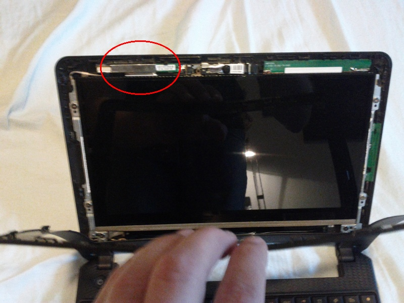
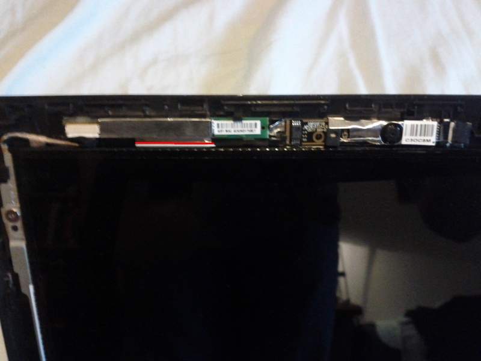
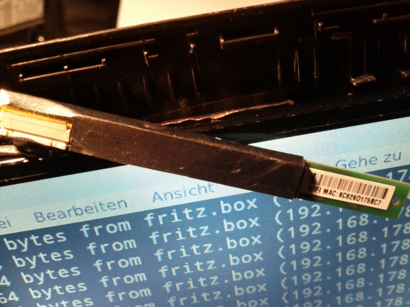

Some users have reported that wireless connections on the Toshiba AC100 are not stable with Ubuntu, although the rt2800usb driver is reported working on other devices.
It was suggested that the wifi problems may be caused by an inproper shielding of the wifi adapter in the display of the AC100. Cutting the shielding between wifi adapter and LCD should solve the problem. I had my doubts, but it worked fine for me on my AC100-10V.
Warning: following the steps is completely on your own risk! Don’t blame me if your AC100 is bricked afterwards.
Open the display: remove the two small screws on the lower left and right of the display, right above the frame joints. The screws are covered by a plug. Use a flat item (a knife or a screwdriver) to carefully split the display front from its back. Note that this display was obviously not designed to be reopened, the small plastic bolts may break.
If you are successful, you can see the wifi adapter (red ellipse).

Use a sharp knife to cut the shielding between wifi adapter and LCD (see the red line).

I broke a small bolt, so the wifi adapter was no longer fixed. I used a tape to isolate the wifi adapter’s shield and fix it on the display.

After that, close the display by arresting the bolts and screws. Now wifi should work stable.
Good luck!